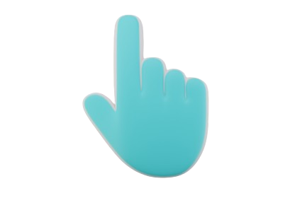

Web Cursors Explained
Max-Techno-Wizard

What are Web Cursors?
Web cursors are the visual indicators, typically a pointer, that show the position of a user's mouse or touchpad on a web page and allow them to interact with elements by clicking, hovering, or scrolling. Websites can use default cursors or customize them with different shapes, colors, and effects using HTML , CSS,and JavaScript to match the site's design and provide feedback
Types of Web Cursors
- Caret Cursor (Default Cursor)
- Pointer Cursor (Hand)
- Text Cursor (I-beam)
Caret Cursor
This is the default cursor you see most of the time when browsing websites. It appears as an arrow and is used for general navigation. When you move your mouse around this text, you'll see the caret cursor! It's called a "caret" because it points at things, helping you select and click on items.
Pointer Cursor

The pointer cursor looks like a pointing hand and appears when you hover over clickable elements like links and buttons. It's a visual clue that tells you "Hey! You can click me!" This cursor makes websites more user-friendly by showing which elements are interactive.
Text Cursor
The text cursor, also called an I-beam, appears when you hover over text that you can select or edit. It looks like a capital "I" and helps you position your cursor precisely when selecting or typing text. You'll see this in text boxes, input fields, and when selecting text on web pages.